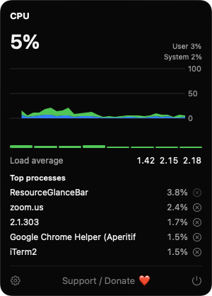
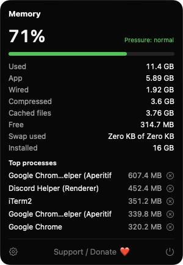
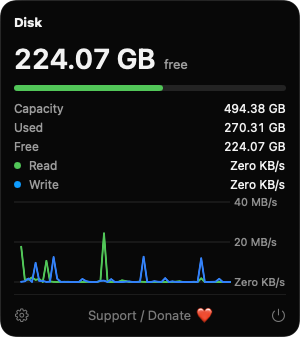
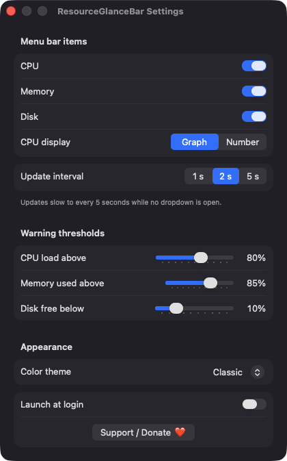

CPU at a glance
A tiny graph of the last 20 samples or a percentage in the menu bar. The dropdown splits user and system load and adds per-core bars, load average and the five busiest processes.
Open source · macOS 14+ · Universal binary · System Monitoring
Live CPU, memory and disk meters sit in your menu bar. Click any one for per-core load, a memory breakdown, disk throughput and the busiest processes.
Free & MIT licensed · Apple Silicon & Intel · Latest release

Features
Each meter is its own menu bar item, and each opens a dropdown with the detail Activity Monitor buries.
A tiny graph of the last 20 samples or a percentage in the menu bar. The dropdown splits user and system load and adds per-core bars, load average and the five busiest processes.
A status dot follows kernel memory pressure and your own threshold. The dropdown breaks memory into app, wired, compressed, cached and free, plus swap used.
See free space on the startup volume in the menu bar. Open it for capacity, used and free, and a live read/write throughput chart.
Toggle each menu bar item, set the update interval to 1, 2 or 5 seconds, tune warning thresholds, pick Classic, Ocean or Mono, and launch at login.
Each listed process has a Quit Process button that asks first, then sends a terminate request. It is disabled for root-owned processes and for the app itself.
Updates slow to every 5 seconds while no dropdown is open, and samples after a long gap such as waking from sleep are discarded. Universal binary, no Dock icon.
Screenshots



Install
ResourceGlanceBar is open source and not notarized with a paid Apple Developer ID, so macOS needs one extra step the first time.
xattr -cr /Applications/ResourceGlanceBar.app
Download
Free, forever. Built for macOS 14 Sonoma or newer, Apple Silicon and Intel.
Not notarized: on first launch right-click ResourceGlanceBar.app → Open.
FAQ
Yes. It is MIT licensed, free to use, and the full source is on GitHub. If it is useful to you, there is a Support button in Settings and in each dropdown.
None. It does not ask for Accessibility, Screen Recording or any other privacy permission. It reads standard system counters and lists only processes your user can see. Launch at login is optional and uses a standard login item.
Nowhere beyond your Mac. There is no server, account or telemetry. The only thing saved is your settings, such as interval, thresholds and theme, in the app's standard macOS preferences.
Notarization requires a paid Apple Developer account, and this is a free project. Right-click the app and choose Open once to approve it, or build it yourself from source with Xcode.
Yes. ResourceGlanceBar was generated by Claude Code from a written spec as a clean-room reimplementation, with no code or assets from any commercial app. The full source is on GitHub under MIT, so you can read every line before you run it. It has had less human review than a hand-written app, so bug reports are welcome.
Support ❤️
ResourceGlanceBar is a free, open-source alternative to paid utilities. If it earns a spot on your Mac, a coffee keeps the updates coming.
☕ Support Or on Ko-fi